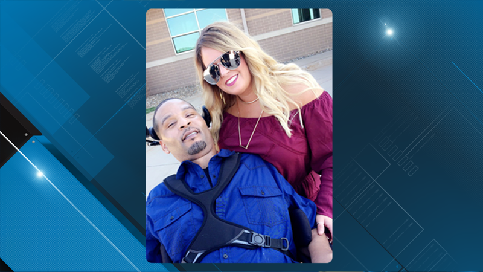
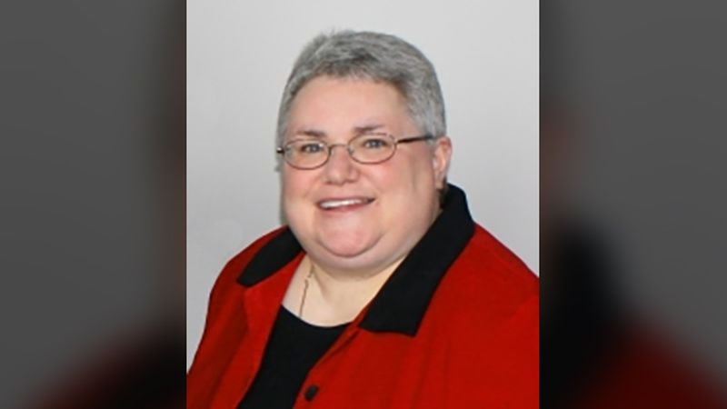
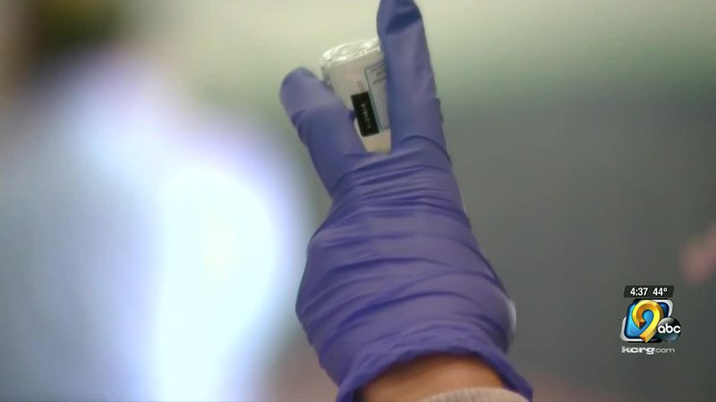

‘What is accurate?’asks Washington Co. family after flip-flop in COVID test results
CEDAR RAPIDS, Iowa (KCRG) - Eric Simon said he couldn’t believe it when he saw his 13-year-old son Landon’s COVID-19 test result: positive.
'I was in shock,' he said.'By the time he had been tested, the only symptom he really had was a stuffy nose.'
Eric and Landon, who live in Riverside, had attended a family wedding the weekend of Oct.3, and by the end of the weekend, a few relatives, plus Landon, started showing symptoms of illness.
Four people, including Landon, were tested for COVID-19 shortly after, according to Eric, and the other three relatives' tests came back negative.
However, Landon, who was tested at the University of Iowa Hospital and Clinics' drive-through test site in Iowa City on Wednesday, Oct.7, received a positive result the same day he was tested.
Eric was so unbelieving that the positive result was accurate that he asked for another test.UIHC said no because the CDC recommends against retesting within 90 days of a positive test.
So Eric had his son tested at the Test Iowa site in Cedar Rapids on Thursday, Oct.8, one day after Landon’s first test.
This time, it came back negative.
'Felt a rush of relief over my body as I read that result,' he said.
A few days later, on Monday, Oct.12, Landon received a third test, again through Test Iowa, and that one came back negative, too.
After two negative tests — plus everyone else they were around at the wedding testing negative as well — Eric said he suspected the first test was a false positive.
'I have very little confidence that first test was accurate,' he said.
But a change in results like Landon’s doesn’t necessarily mean one of them was inaccurate, according to Dr. Bradley Ford, medical director of the Clinical Microbiology Laboratory at UIHC.
'And that’s the tricky part,' Ford said, prefacing his explanation by saying that COVID testing is a complicated topic.
Ford said flip-flops in test results weren’t as common at the beginning of the pandemic, when most people tested were symptomatic, which led to 'hot positives.'However, he said that type of change in results is now 'fairly normal,' with testing more widely available.
'Usually the story is these days that somebody had just a very little amount of virus, and that doesn’t necessarily correlate with disease or transmissible disease, and you sampled a little bit of the virus on one day, and for whatever reason, you missed it the next day.It could be, and we’ve seen this, that person would test positive the next day and negative the next day,' he said.
All COVID testing at UIHC is reverse transcription polymerase chain reaction, or RT-PCR, testing, which looks for evidence of the virus' genetic material.The FDA reports this type of testing is typically highly accurate.
'You really don’t get false positives, per se, at least from a PCR-type test,' Ford said.'You could, of course, because you’re looking for genetic information, somehow cross-contaminate a sample or switch samples or other sorts of misadventure that there are really good administrative controls on in most labs.'
UIHC, where Landon’s positive test was processed, has those controls in place, according to Ford.
'Anybody who tests positive, we examine the data first to make sure it doesn’t look like there’s something off with it,' he said.'So many, many steps that this would’ve gone through, where internal and external controls were applied — all the IDs were checked, everything’s barcoded and automated — that it’s very hard to make this some sort of technical error.'
Ford noted all of UIHC’s in-house testing is processed in the Core Clinical Microbiology Lab, which is on the other side of the building from the drive-through testing location, so tests collected there don’t leave the campus.
'These are all collected one at a time, sealed in tubes and then sealed in bags, and then anything that hypothetically leaked would be thrown out, and anything that it came into contact with would be not accepted,' Ford said, adding that UIHC protocol requires patients be notified when their sample isn’t processed because of an error so they can be retested.
Landon’s two negative tests were done through the state testing program, Test Iowa, which also uses PCR tests.
News outlets, including KCRG, have previously reported problems with the accuracy of these tests, and the state doesn’t track these tests separately from other tests, so there’s no way of evaluating how it performs against other options.
But Gov.Kim Reynolds has defended the reliability of these tests.
Ford said there’s no way to determine if a patient’s result is a false positive — 'You’d have to do it prospectively instead of retrospectively, and retrospectively is how everybody asks for the question, unfortunately,' he said — but said UIHC is confident its test results are accurate.
'I would say, statistically, it’s what we would consider so unlikely that we don’t consider it as a possibility,' he said of false positives.
But even if people doubt the accuracy of a positive test result, Ford said they should still self-isolate.
'The good news is, at the end of the quarantine, you are off the hook for being transmissible,' he said.'It’s official, and it’s one clock you can point to as being totally accurate.'
That’s what Landon did, returning to school Thursday after a 10-day quarantine.
But the ordeal in the days that preceded it shattered his dad’s perspective on testing.
'It doesn’t give me a lot of faith in the entire testing that they’re doing right now,' Eric said.
Copyright 2020 KCRG.All rights reserved.
Posted On: 2020-10-16T05:05:00
Posted By: Mary Green



Content Date: 2020-10-16
Download Date: 2021-04-21
Document ID: L0C04APPJ